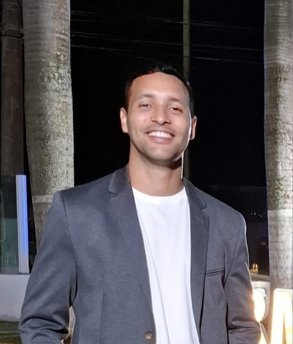

Luiz Castro
32 anos
Rio de Janeiro
Sobre mim
Meu nome é Luiz Renato Castro, tenho 32 anos e sou natural do estado do Paraná.
Atuo na Marinha do Brasil desde 2013, onde iniciei minha carreira como Mecânico de Aeronaves. Em 2017, decidi ampliar meus horizontes e passei a atuar na área de Tecnologia da Informação, com foco em:
- Suporte técnico a usuários
- Montagem e manutenção de computadores
- Gerenciamento de servidores de arquivos
- Administração de sites institucionais
A tecnologia se tornou não apenas minha profissão, mas também uma grande paixão.
Minhas redes sociais
O que gosto de fazer:
Meus hobbies preferidos são aqueles que me desafiam a evoluir constantemente:
- Academia
- Futebol
- Corrida
- Programação
O que me motiva?
Sou movido por desafios e pelo desejo contínuo de aprender coisas novas. Acredito no poder da melhoria constante e busco ser uma versão melhor de mim a cada dia.